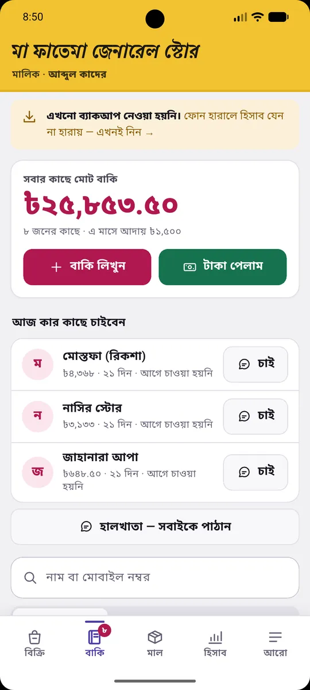
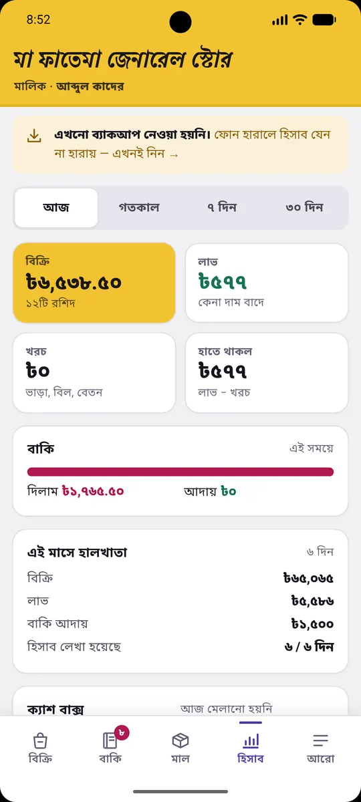
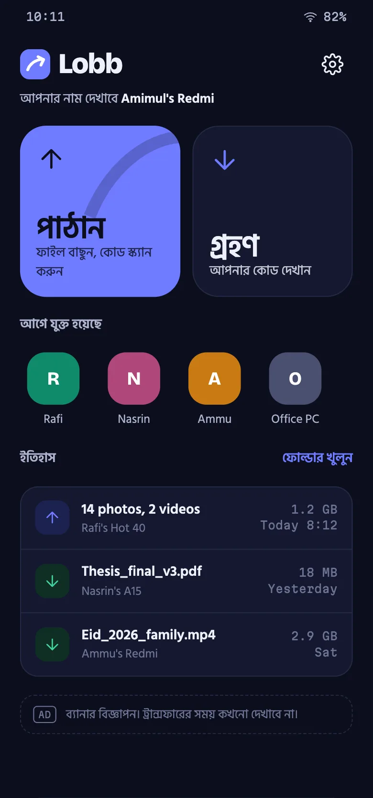
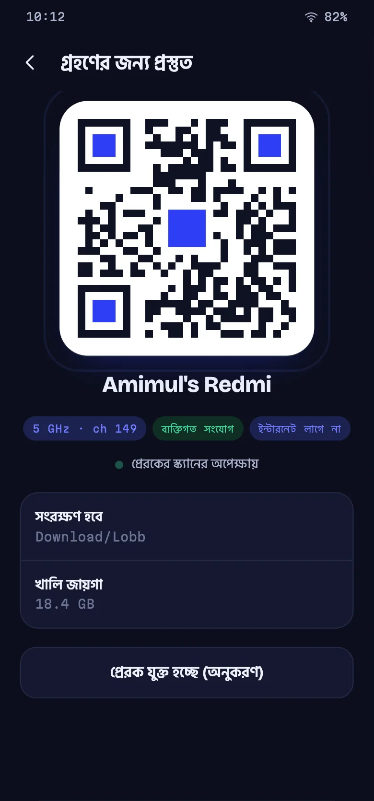

Restaurant tills, hospital wards, gym doors with RFID, print kiosks that take bKash. I research the trade, design it, write every layer — Go APIs, Flutter and web apps, the database, the server — and deploy it myself. 24 products so far, and 13 of them you can open in your browser right now.
Fig. 1 Real screens, captured from the running products. Every one was designed, built and deployed by one person.
Products shipped
24 · solo
Open right now
13 live demos
Rate
$45/hr · fixed bids
Payments shipped
bKash · live
Trained
CSE, BUET
Now in Bogura
UTC+6
01
Record of work
Every system here I designed, wrote and released myself: schema, API, apps, deploy. The status next to each is the honest one. “Live” means it is serving people today; “demo” means you can open it and press every button with sample data.
24 systems · 13 you can open right now
2.01
Restaurant managementLive demo
মেজবান
Restaurant staff run the whole floor from phones and tablets: waiters take orders, the kitchen screen gets tickets, the cashier bills with VAT and the owner reads the day's numbers.
Hospital software for Bangladeshi private hospitals and clinics: reception, doctors, nurses, lab, billing and pharmacy work in one staff workspace, and patients follow their live serial on their phone.
Gym management for Bangladesh: members tap an RFID card at the door, the door decides, and the front desk sees who is inside, who owes money and who is drifting away.
A Dhaka laundry's own pickup app: customers book from their phone, the shop weighs the bag, the customer approves the real price, and only then is it washed; the shop runs everything from a back office.
Pay-per-page self-service printing: a customer scans the QR sticker on a printer, uploads a file, pays with bKash and collects the pages, with no account needed.
Bangladeshi schools build and publish their own website from an Android app, in the government (DSHE) format or a photo-led template, then pay yearly or monthly by bKash, Nagad or bank.
Hardware and building-material shops sell cement, rod and pipe across shop and godowns, while the owner sees cost, profit and a theft-catching audit that staff cannot.
Barbershops, beauty parlours and makeup artists in Bangladesh buy their tools and supplies from a single seller that stocks, checks and delivers everything itself.
A Bangla pharmacy app for Bangladeshi shop owners: sales, stock by batch, expiry warnings and the customer credit book (বাকি) on an Android phone.
Flutter · Riverpod · Java 21
2.13
Skincare e-commerceLive
শিশির
A Bangla-first online skincare store for Bangladesh where shoppers pick a routine, order with cash on delivery, and get a photo of the actual box with batch and expiry before paying.
An AI phone caller that rings Bangladeshi leads for a business and talks with them in natural colloquial Bangla to sell, book demos, confirm orders, remind dues or run surveys, then saves the outcome, transcript, recording and a quality review.
A tele-sales CRM built for a real Bangladeshi smart-board company, replacing a shared Google Sheet: agents work a daily call queue, log call results in one tap, and the manager sees team and ad-campaign performance.
Go · MySQL · JavaScript
2.16
Travel agency systemBuilt, not deployed
সফরখাতা
Travel and Umrah agencies manage leads, bookings, installments, passports, visas and supplier dues, and each customer gets a status link for what they paid and owe.
Go · MySQL · Vanilla JS


2.17
Shop ledger appAPK download
হালখাতা
A Bangla Android app for small grocery shop owners to run sales, customer credit (baki), stock and daily accounts entirely on their own phone.
Poultry feed dealers use it as their credit book, tracking what each farmer owes per batch of birds until the batch is sold.
Go · MySQL · JavaScript PWA
2.19
Garage rent bookBuilt, not deployed
চাকা
Garages that rent easy-bikes, battery rickshaws and autos to drivers by the day use it to collect the daily rent and see every driver's arrears.
Go · SQLite · Flutter


2.20
Offline file transferBuilt
An Android app that sends photos, videos and files directly from one phone to another over Wi-Fi Direct, with no internet, account or server.
Kotlin · Flutter · Dart
2.21
PDF toolkitBuilt, not deployed
An installable web app that gives anyone all 33 iLovePDF-style tools (merge, compress, OCR, convert, sign, redact, compare and more) with every file processed on their own device.
TypeScript · Preact · Vite
2.22
Viral food mapLive
স্বাদের ম্যাপ
A viral Bangla web toy where people tick the famous food of each of Bangladesh's 64 districts they have eaten and share their own X/64 map card.
A calm, ad-supported Android block puzzle where players fit dyed-cloth patches onto an 8×8 board drawn like a hand-stitched kantha quilt.
Flutter · Dart · Android
2.24
Arcade gameBuilt, not published
A colour-shooter puzzle game where paint tins ride a rail around a Bangladeshi rickshaw-art panel and the player paints the picture square by square.
Flutter · Dart · JavaScript (prototype)
01.b
Three, drawn in detail
Sheet 1.1
NEXA / Easy Print
Pay-per-print kiosk
Live · production bKash
A shop printer, a customer with a phone, and no cashier. The customer scans a QR sticker on the machine, uploads a document and pays with bKash. A print agent on the shop PC releases the job.
Decision
The web app is compiled into the Go binary and served by the same process, with a content hash stamped into the HTML at boot. One artifact deploys both; there is no cache-busting step to forget.
Decision
QR stickers are glued to machines, so the public URL they encode is treated as infrastructure that can never change. Recreate the environment carelessly and every sticker in the field dies.
Learned
Rotating the JWT secret signs out every customer, and an empty secrets file silently kills OTP SMS. Deploys now restore secrets from the live environment instead of regenerating them.
Go · Vue 3 PWA · Go print agent · Elastic Beanstalk · RDS · bKash
A member taps an RFID card, the door decides, and the front desk sees the consequence: paid, 21 days over, or frozen. One install serves many gyms, and an operator console enrols and bills them.
Decision
A database per gym. Tenancy is a single resolver call at the edge, so no query in the codebase ever names a tenant, and a missing filter cannot leak one gym into another.
Decision
The app connects as a scoped database user whose blast radius is proven by a setup command on every run. It cannot read the other products that share the server.
Detail
The public demo reseeds itself every night at 03:00 Dhaka time, with members in known states, so every sales conversation starts from the same story.
Go · Gin · MySQL per tenant · Next 15 · RFID · Cloudflare Tunnel
Sheet 1.3
তিরিশ / Tirish
Credit book for poultry dealers
Built · e2e green
Dealers finance farmers with feed and chicks on credit, then settle when the flock is sold. The ledger knows the feed curve, so it can say “3,000 birds cannot have eaten 256 bags by day 23” before the loss happens.
Decision
No status fields. Every state a flock can be in is derived from its delivery date, so the ledger cannot drift into saying two things at once.
Learned
The first offline outbox filed server rejections where nothing read them and told the dealer everything was fine. Now a refused write fails loudly, on screen, until someone deals with it.
Decision
Android without a second codebase: a Kotlin WebView shell around the same web app, served from a secure origin so the service worker works, with window insets passed in as CSS variables.
Older work — Java services, Kafka, gRPC, Keycloak — is on GitHub. Client code stays private.
02
How a build goes
The eight steps behind the recent builds. You get the documents from each one, not just the code. ঘটক went through all eight — research to a deployed Go server and Flutter app — on 9 October 2026, in one day.
STEP 01
Research the trade
Who pays, what they use now, what it costs them. For a school site builder that meant reading the education directorate’s orders and turning their 11 required items into a checklist.
STEP 02
Write the PRD
Goals, non-goals, roles, every screen and its states, and what “done” means. You approve this before a line of code.
STEP 03
Clickable prototype
A prototype you can tap through on your own phone, with realistic data, before the backend exists. Cheap to change here, expensive later.
STEP 04
Design critique
An independent review of the prototype for usability, accessibility and contrast. The findings are fixed, not filed.
STEP 05
Build every layer
Go API, MySQL or Postgres, Flutter or a web app that works offline. Tenancy, roles and audit trails go in from day one.
STEP 06
Test the real thing
End-to-end against a real database and a real browser: 20 simultaneous payment confirmations, exactly one ledger row on the travel system, 968 screens across 13 roles crawled on the hospital system.
STEP 07
Deploy it
On your server or mine: TLS, backups, a service that restarts itself, and a demo that reseeds every night so it always tells the same story.
STEP 08
Hand it over
A written handover, a runbook, and for several products a narrated video manual in Bangla for the staff who will actually use it.
03
Rules I build by
Not a skills list. Each one is something that broke in production, and the rule it left behind. Fig. 2 is R-01, working: cut the line and keep selling.
Sale #0112 sent · 38 ms
Fig. 2 A till that keeps selling when the line drops. Cut it, ring up a few sales, then restore it. One of them will come back refused, because another counter sold the last box first. That refusal is shown to the cashier, not buried.
R-01
A refused write fails loudly.
Offline-first means the outbox has to tell the truth. If the server says no, the person holding the phone sees it — not a log file.
R-02
Tenancy lives in one place.
A database or a row-level policy per customer, resolved once at the edge. Isolation you can prove with a command, not a code review.
R-03
One binary, one deploy.
The frontend ships inside the backend. Fewer moving parts means fewer 2 a.m. mismatches between what was built and what is running.
R-04
Money paths get operations, not just code.
Production bKash, OTP over SMS gateways, secrets that must survive redeploys. The failure is usually in the runbook, so I write the runbook.
R-05
Tests pin the real thing.
End-to-end over real HTTP against a real database, and crawls of every screen for every role. Mocks are for the parts I don’t own.
R-06
State is derived, not stored twice.
If a status can be computed from a date, it is. Then there is no second field to forget to update.
04
How to hire me
Fixed prices and fixed scope. No discovery-call funnel. Every engagement ends with something deployed and a written handover — the same handover documents I keep for my own systems.
Three days
System audit
$500
I read the codebase and the deploy path
A written report: what will break, in order of severity
The top three fixes applied, not just described
Paid on delivery
Two weeks · most common
Build sprint
$3,600
One working system, shipped to your production
Internal tool, customer portal or an integration
Go or Flutter, on your infrastructure or mine
Tests, deploy script and handover doc included
Half on start, half on deploy
Monthly
Retained engineer
$4,500/mo
About 100 hours on your backlog, in your standups
Overlap with all EU hours and US mornings
On call for the systems I build
One month minimum, cancel any time after
The code
Is yours from the first commit, in your repository.
Payment
Payoneer or bank wire, in USD.
Working hours
11:00–23:00 in Bangladesh (UTC+6).
The rate
$45 an hour underneath every price. No bundle discount to argue about.
Send me the problem, not a job spec.
Describe what breaks or what you need built. I reply with a fixed price and a date — or I tell you it is not worth paying me for.